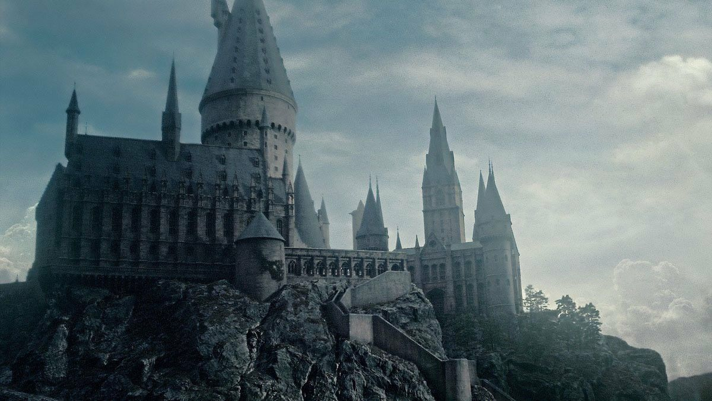

Olá trouxa! Bem-vindo ao nosso blog mágico! Se você ainda não me conhecia , bem, muito prazer! Sou uma bruxa (como você já deve saber haha), tenho cerca de 27 e trabalho no Ministério da Magia no Departamento para Regulamentação e Controle das Criaturas Máicas, lugar fascinante onde você jamais fica entediado, isso posso te garantir.
Como um bom blog mágico deve ser, aqui vamos te informar sobre tudo e mais um pouco do mundo bruxo, de notícias oficiais do Ministério até os mais novos doces das Gemialidades Weasley ( o adorável Creme de Canário, meu preferido! Muitas penas envolvidas haha), abrangendo também para algumas especulações sobre o nosso mundo mas nos negamos a espalhar fofocas , que fique claro isso!
Depois de toda essa introdução duvido que se recuse a um convite, mais que bem-vindo, para entrar na nossa comunidade bruxa, que só está aumentando! Venha ficar por dentro de tudo que está acontecendo!
ATENCIOSAMENTE, como Fogos Espontâneos das Gemialidades Weasley, Patrícia Wilkins.
